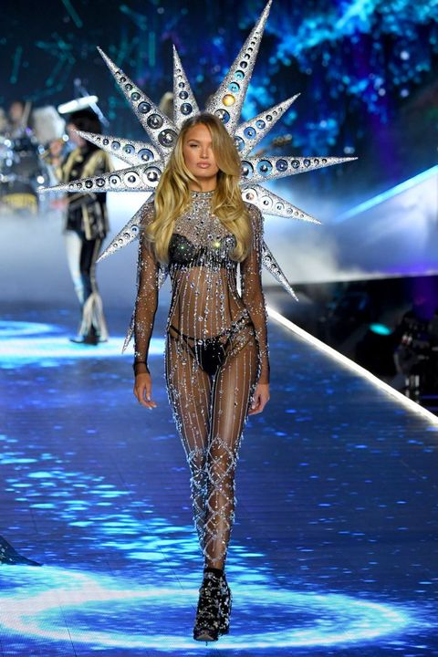

The Victoria's Secret Fashion Show was an annual show sponsored by and featuring Victoria's Secret, a brand of lingerie and sleepwear. Victoria's Secret uses the show to promote and market its goods in high-profile settings.
The show was a lavish event with elaborate costumed lingerie, varying music by leading entertainers, and set design according to the different themes running within the show. The show attracts hundreds of celebrities and entertainers, with special performers and acts every year. Each year, twenty to forty of the world's top fashion models are selected to perform in the fashion show. In a typical year, this includes about a half dozen women under contract to the company,[1] known as Victoria's Secret Angels; the current Angels include Behati Prinsloo, Candice Swanepoel, Lily Aldridge, Lais Ribeiro, Elsa Hosk, Jasmine Tookes, Martha Hunt, Sara Sampaio, Romee Strijd, Stella Maxwell, Taylor Hill, Josephine Skriver, Barbara Palvin, Alexina Graham, Grace Elizabeth, and Leomie Anderson.
American network television broadcasts the show during prime time. The first few shows in the 1990s were held in the days preceding Valentine's Day to promote the brand for this holiday due to its romantic theme. They were not aired on national television. In 1999 and 2000, the show was webcast. Beginning in 2001, the shows were moved ahead of the Christmas holiday season. Also in 2001, the show made its network television broadcast debut on ABC, though from 2002 to 2017, it had been broadcast on CBS; the show moved back to ABC for the 2018 edition. The show has been held at a variety of locations in different cities including Miami, Los Angeles, Cannes, Paris, London, and Shanghai. The first four shows were held at the Plaza Hotel in New York City, but since it has become a televised event, it has most often been held at the 69th Regiment Armory in New York City.
The arguably most unique feature of each year's collection are the inclusion of wings as part of some of the outfits. The idea to feature wings as part of the collection came in the wake of the immense success of the "Angels"-bra line, which was advertised with the models Tyra Banks, Helena Christensen, Karen Mulder, Daniela Pestova, and Stephanie Seymour wearing wings, and was introduced to the annual show in 1998. The very same models who were featured in the campaigns for the "Angel"-bra line, with the exception of Chandra North filling in the spot for Christensen, walked the runway with Angel wings on. Over the years, the show featured various forms and sizes of wings, such as butterfly, peacock, or devil wings, which have become emblematic of the Victoria's Secret brand. In theory, wings are any ornamental back piece worn by a model on the runway, or any sort of structural appendage resembling traditional wings. Even though the amount of wings have expanded over the years and thus far have taken away the prestige to wear wings, a lot of models still consider it an honour to wear wings. Adriana Lima has worn the most wings in the history of the show. With her count of 22 pair of wings, she's closely followed by Alessandra Ambrosio and Candice Swanepoel, who have worn 18 pair of wings.